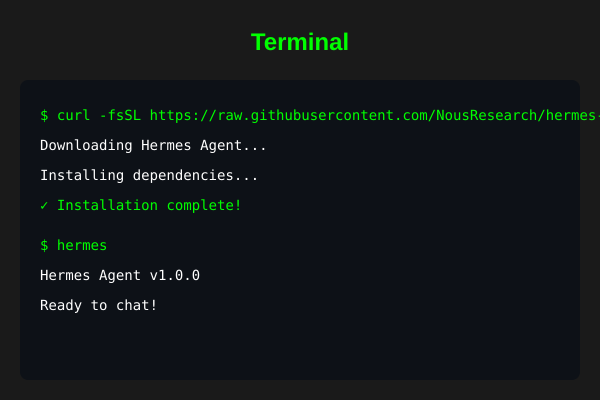
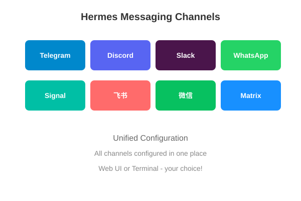

什么是 Hermes？
Hermes 是由 Nous Research 开发的自进化 AI Agent。它是唯一一个内置学习循环的 Agent —— 能从经验中创建技能、在使用中改进技能、搜索过去的对话记录，并在跨会话中建立对用户的深度了解。支持 Telegram、Discord、Slack、WhatsApp、Signal、飞书、微信等多种平台接入。
一、环境准备
在安装 Hermes 之前，需要确保 Mac 上已安装以下依赖：
1. Homebrew（macOS 包管理器）
如果尚未安装 Homebrew，在终端执行：
/bin/bash -c "$(curl -fsSL https://raw.githubusercontent.com/Homebrew/install/HEAD/install.sh)"安装完成后，按照终端提示将 Homebrew 添加到 PATH：
echo 'eval "$(/opt/homebrew/bin/brew shellenv)"' >> ~/.zshrc
source ~/.zshrc2. Node.js（版本 22 或更高）
brew install node@22
# 或者使用 nvm 管理多版本
brew install nvm
nvm install 223. Git
brew install git4. 验证安装
node --version # 应显示 v22.x.x
npm --version # 应显示 10.x.x
git --version # 应显示 git version 2.x.x
brew --version # 应显示 Homebrew 4.x.x二、项目拉取
方式一：使用官方安装脚本（推荐）
curl -fsSL https://raw.githubusercontent.com/NousResearch/hermes-agent/main/scripts/install.sh | bash
图1: Hermes 安装过程示意图
安装脚本会自动完成以下操作：
- 克隆项目到 ~/.hermes/hermes-agent
- 安装 Python 依赖（使用 uv）
- 创建虚拟环境
- 运行初始配置向导
方式二：手动 Git 克隆
mkdir -p ~/.hermes
cd ~/.hermes
git clone https://github.com/NousResearch/hermes-agent.git
cd hermes-agent常见报错及解决方案：
报错：xcrun: error: invalid active developer path
解决方案：安装 Xcode Command Line Tools
xcode-select --install
报错：git: 'credential-osxkeychain' is not a git command
解决方案：重新安装 Git
brew reinstall git三、拉取验证
确认项目拉取成功：
# 检查项目目录是否存在
ls -la ~/.hermes/hermes-agent
# 检查主要文件
ls ~/.hermes/hermes-agent/README.md
ls ~/.hermes/hermes-agent/pyproject.toml
# 验证 Git 仓库状态
cd ~/.hermes/hermes-agent
git status如果看到项目文件和 Git 仓库信息，说明拉取成功。
四、基础配置
1. 运行配置向导
hermes setup配置向导会引导你完成：
- 选择 LLM 提供商（OpenRouter、OpenAI、Nous Portal 等）
- 配置 API Key
- 选择默认模型
- 设置基本偏好
2. 手动配置（可选）
# 查看当前配置
hermes config show
# 设置配置项
hermes config set provider openrouter
hermes config set model anthropic/claude-sonnet-4
# 编辑配置文件（高级）
hermes config edit3. 配置文件位置
所有配置存储在 ~/.hermes/ 目录：
- ~/.hermes/config.yaml - 主配置文件
- ~/.hermes/auth.json - API 密钥和凭证
- ~/.hermes/.env - 环境变量（平台 Token 等）
五、推荐项目：Hermes Web UI
什么是 Hermes Web UI？
Hermes Web UI 是 Hermes Agent 的全功能 Web 管理面板。提供 AI 对话、会话管理、平台渠道配置、定时任务、使用统计等功能，全部通过简洁的 Web 界面完成。
功能亮点：
- 实时流式 AI 对话（SSE）
- 多会话管理（创建、重命名、删除、切换）
- 统一管理 8 个平台渠道配置
- 使用量统计和成本追踪
- 定时任务管理
- 技能和记忆浏览

图2: Hermes Web UI 管理面板
完整部署方式：
# 全局安装
npm install -g hermes-web-ui
# 启动 Web UI
hermes-web-ui start
# 默认访问地址：http://localhost:3000自定义端口启动：
hermes-web-ui start --port 8080六、渠道接入

图3: Hermes 支持的消息渠道
方式一：通过 Web UI 配置（推荐）
启动 Hermes Web UI 后，在浏览器访问 http://localhost:3000，进入"Platform Channels"页面，可以统一配置所有平台。
方式二：通过终端配置
飞书（Feishu / Lark）接入：
1. 在飞书开放平台创建应用，获取 App ID 和 App Secret
2. 配置权限和事件订阅
3. 在 ~/.hermes/.env 中添加：
FEISHU_APP_ID=cli_xxxxxxxxxxxxxxxx
FEISHU_APP_SECRET=xxxxxxxxxxxxxxxxxxxxxxxxxxxxxxxx
FEISHU_ENABLED=true
在 ~/.hermes/config.yaml 中配置行为：
feishu:
mention_control: true
allowed_users:
- ou_xxxxxxxxxxxxxxxx微信（WeChat）接入：
微信接入支持扫码登录方式：
# 启用微信渠道
hermes config set wechat.enabled true
# 启动网关后会弹出二维码，使用微信扫码登录
hermes gateway startWeb UI 配置项 vs 终端配置项的区别：
- Web UI 配置项：存储在 ~/.hermes/.env（凭证）和 ~/.hermes/config.yaml（行为），通过 Web 界面修改后自动写入文件
- 终端配置项：使用 hermes config set 命令直接修改配置文件
- 两种方式修改的是同一份配置，效果相同
七、启动使用
1. 启动 Hermes 终端交互
# 重新加载 shell 配置
source ~/.zshrc
# 启动 Hermes 终端界面
hermes2. 启动消息网关（用于 Telegram、Discord 等平台）
# 安装为系统服务（macOS launchd）
hermes gateway install
# 启动网关
hermes gateway start
# 查看网关状态
hermes gateway status3. 常用命令速查
- hermes - 启动交互式终端
- hermes model - 切换模型
- hermes tools - 配置工具
- hermes gateway start - 启动消息网关
- hermes doctor - 诊断问题
- hermes update - 更新到最新版本
4. 终端内快捷操作
- /new 或 /reset - 开始新对话
- /model [provider:model] - 切换模型
- /skills - 浏览技能
- Ctrl+C - 中断当前工作
八、提交上线
完成所有配置后，将你的配置和自定义内容提交到 GitHub：
# 进入项目目录
cd ~/.hermes/hermes-agent
# 查看状态
git status
# 添加修改（注意：不要提交包含 API Key 的文件）
git add .
# 或者选择性添加
git add SKILL.md
git add custom-config.yaml
# 提交
git commit -m "feat: 添加自定义配置和技能"
# 推送到远程仓库（如果有 fork）
git remote add origin https://github.com/你的用户名/hermes-agent.git
git push -u origin main⚠️ 安全提醒：
- 永远不要提交包含 API Key 的 auth.json 或 .env 文件
- 在 .gitignore 中排除敏感文件
- 使用环境变量或密钥管理服务存储敏感信息
完
参考资料：
- Hermes Agent 官方文档：hermes-agent.nousresearch.com/docs
- GitHub 仓库：github.com/NousResearch/hermes-agent
- Hermes Web UI：github.com/EKKOLearnAI/hermes-web-ui